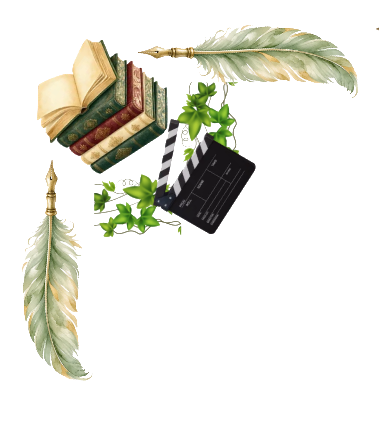
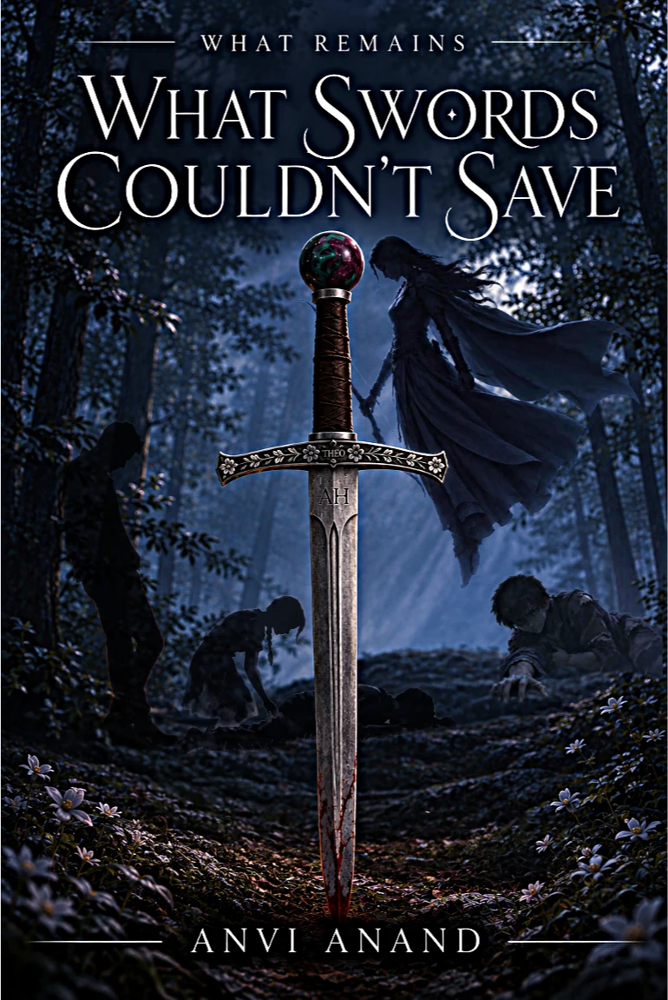

Welcome!
I'm Anvi Anand!
I am aspiring to be a writer and actor.
Check out the sneak peek of my book below!

I am aspiring to be a writer and actor.
Check out the sneak peek of my book below!
I'm an 8th grader who got into writing from the short stories in 5th grade ELA, and never really stopped. I write fantasy, and I've already unofficially written one novella. I got into acting by watching behind-the-scenes from my favorite movies, and just got pulled in. Acting is my favorite fine arts activity of all time, with singing as a close second.
Right now I am writing a fantasy series called What Remains. I am writing the first book at the moment, called What Swords Couldn't Save.
When I'm not writing or acting, I can usually be found reading.

Follow 13 year old Astoria Hopkins on her journey to quell the rebellion that threatens her kingdom. Meet her brother, Theodore, her best friend, Rowan, and her unexpected accomplice, Caspian.
"I took my position.
One step forward. A turn. A swing.
The wooden blade cut through the air with a satisfying whistle. I shifted my weight, brought it around, and stepped back into position.
Again.
I repeated the movement, faster this time. My feet found their rhythm against the earth. I swung, turned, and brought the sword up to meet an imaginary opponent.
A branch snapped somewhere behind me."